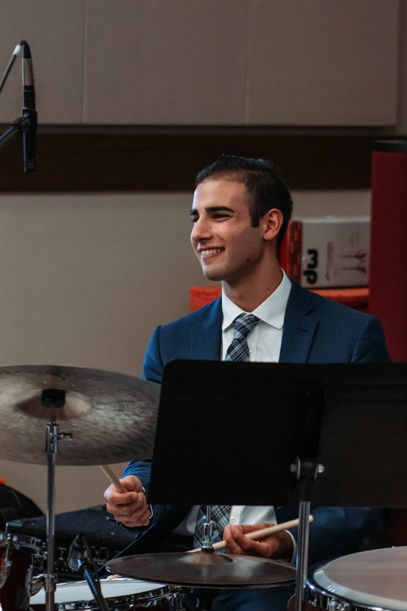

5185 Ponce de Leon Boulevard, Coral Gables, FL 33146
Marcello Carelli, a rising junior at the University of Miami's Frost School of Music, is well on his way to becoming one of the busiest drummers in town. Majoring in Studio Music and Jazz, Carelli was chosen as a Stamps Distinguished Ensembles Scholar to perform in a prestigious Jazz Quintet for all four years as an undergraduate. Marcello has also played in the Frost Concert Jazz Band and the Brian Lynch Artist Ensemble, the other two top groups at Frost directed by two Grammy Award-winning faculty members.
Originally from Bedford Hills, New York, Carelli has already played with many esteemed artists including Brian Lynch, Dave Liebman, Ira Sullivan, John Daversa, Andy Fusco, and Walt Weiskopf. He has traveled to places such as Italy, Surinam, New Orleans, California, and Colorado to perform at well-known jazz festivals, compete, and educate other aspiring young musicians. Marcello is a product of many fine teachers, the most notable one being Dafnis Prieto, 2011 MacArthur Fellow and 2019 Grammy Award-winning drummer and composer. Some of his greatest influences are Philly Joe Jones, Art Blakey, Al Harewood, Joe Henderson, Roy Hargrove, Greg Hutchinson, and Eric Harland.
| Hobbies/Other Interests | Year(s) |
|---|---|
| Sports Analyst on UMTV's SportsDesk "Head to Head" Segment | Fall 2019 |
| Radio Broadcaster on "WDNA Frost Jazz Hour" with Chuck Bergeron | 2018-2019 |
| Playing Golf, Fox Lane High School Varisty Team | 2013-2017 |
| Composing and Arranging Music | 2016-Present |
Check out this video story on Marcello
Go to Marcello's Instagram Page
Go to Marcello's Facebook Page